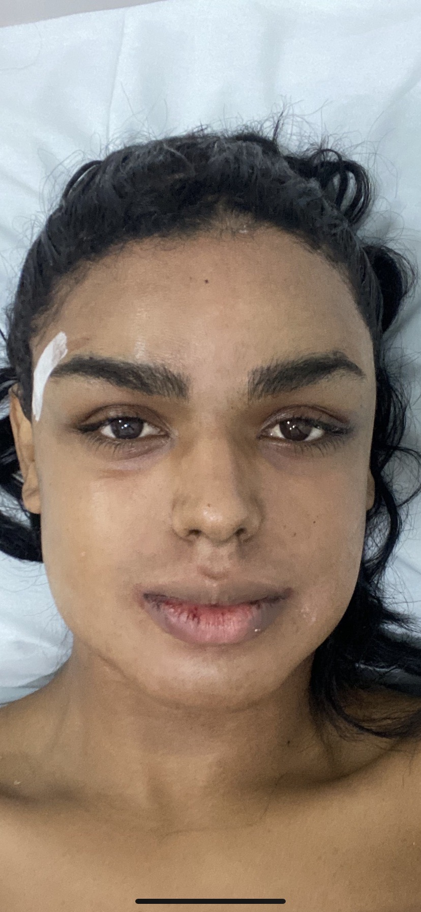
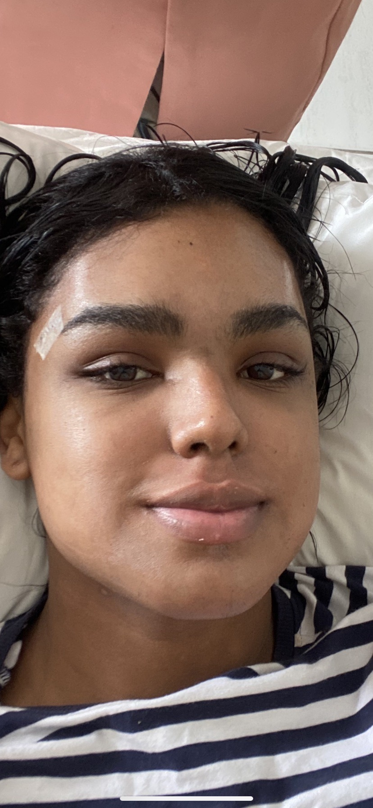
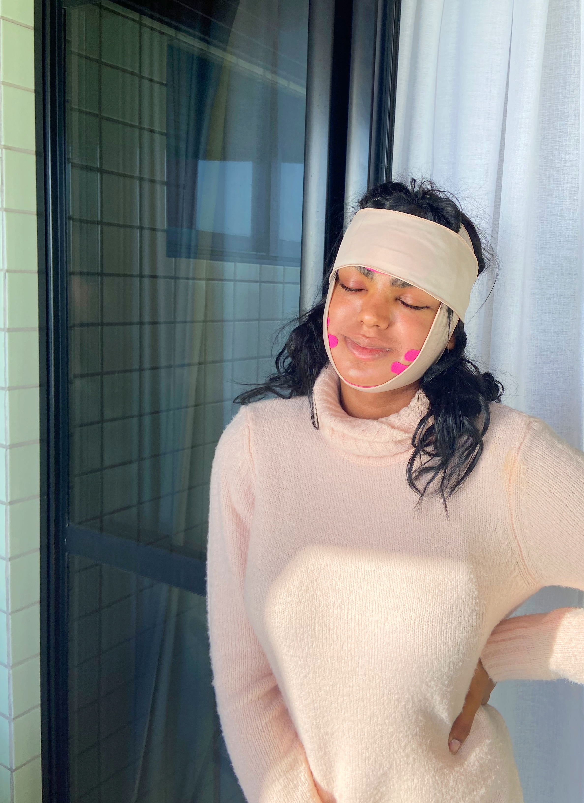

Da Mente ao Corpo — Hormônios, Cirurgias, Kamol Hospital,
Neuroplasticidade e os Segredos que Ninguém te Conta
"Este guia me deu mais informação em uma tarde do que anos procurando na internet. Obrigada Bianca."
"A parte do Kamol Hospital foi exatamente o que eu precisava antes de marcar minha cirurgia. Detalhadíssimo."
"As fotos reais da Bianca me deram coragem para seguir em frente. Não estava esperando tanta transparência."
Neuroplasticidade, disforia, coming out, autoestima
Segredos, diário mês a mês, exames, alimentação
Lipo, mama, BBL, make, moda, treino — Dr. Felipe Mendonça
FFS, voz, redesignação — Dr. Rostand, valores reais
Processo completo, 30 dias, dilatação, recuperação real
Retificação, trabalho, denúncia, direitos legais
Técnicas, cirurgia, recuperação, recursos gratuitos
Namoro, sexualidade, maternidade, dinheiro, OnlyFans
10 erros, glossário, cronograma, carta, mensagem final
Transformação real — arraste o slider
A história real de Bianca Nunes
O que acontece no seu cérebro — e como usar a neurociência como ferramenta de cura e transformação.
A neurociência já comprovou: o cérebro de mulheres trans tem estruturas femininas desde o nascimento. A região BSTc — responsável pela percepção de gênero — é feminina em mulheres trans independente de qualquer hormônio. Isso não é fase. Não é escolha. É biologia.
Neuroplasticidade é a capacidade do cérebro de criar novas conexões e reescrever padrões ao longo da vida. Durante a transição ela trabalha para você:
O trauma de anos fingindo ser quem você não é fica gravado no corpo: tensão no maxilar, postura fechada, voz controlada. Quando você começa a transição, o corpo literalmente relaxa pela primeira vez. Dor crônica some. Ansiedade cai. Sono melhora. Não é coincidência — é neurociência.
Disforia é o sofrimento do desalinhamento — desgosto ao espelho, angústia com o nome, ansiedade em espaços públicos, depressão sem causa aparente.
Euforia de gênero é a alegria profunda de ser vista como quem você é. Explode quando alguém usa o pronome certo, quando uma roupa encaixa, quando sua voz soa como sempre deveria.
"Será que sou trans de verdade?" É a dúvida que persegue quase todas. A resposta: mulheres cis não ficam questionando se são mulheres. O fato de você questionar já é uma resposta. Além disso: não existe "trans suficiente". Existem mulheres trans em todos os estágios, corpos e expressões.
A transição traz um luto profundo — pela infância que você não teve como menina, pelos anos perdidos fingindo, pelos relacionamentos que mudaram. Esse luto é real, válido e necessário. Não fuja dele. Processar com apoio é o que permite curar.
Após cirurgias grandes, é comum uma depressão temporária que pega muitas mulheres de surpresa. Você esperava euforia pura — mas sente tristeza, vazio, irritação. Isso acontece por:
Saber que isso é normal — e que passa — já ajuda imensamente.
Escolha um momento tranquilo, sem pressa. Não faça por mensagem se puder evitar. Tenha em mente que a primeira reação raramente é a definitiva — famílias frequentemente mudam com o tempo.
Script real: "Preciso te contar algo importante sobre mim. Sempre me senti diferente do que o mundo via em mim. Agora entendo que sou uma mulher trans. Isso não muda quem eu sou para você — sou a mesma pessoa. Só estou sendo honesta pelo primeiro vez."
Amigos verdadeiros ficam. Os que saem precisavam sair. Comece pelos mais próximos e confiáveis — eles vão te apoiar e ajudar com os outros.
Fale com o RH antes de anunciar para colegas. Explique sobre o nome social. Se a empresa não respeitar, você tem direitos legais.
Nunca aceite profissional que tente "curar" sua identidade ou use terapia de conversão. Isso é antiético, ilegal no Brasil e causa danos comprovados.
Tudo que você precisa saber — incluindo os segredos que os médicos raramente contam.
A THF usa estrogênio e antiandrogênios para alinhar o corpo com a identidade feminina. É um dos passos mais transformadores da transição — e um dos mais mal compreendidos.
Feminiza pele, corpo e emoções
Bloqueia a testosterona
Efeito mais constante
Absorção diária pela pele
Debaixo da língua
Mais acessível
1. A via importa MUITO. Estrogênio oral perde eficiência no fígado. Injetável ou sublingual absorvem 3–5x melhor.
2. Sutiã com enchimento acelera o crescimento. O estímulo mecânico nas glândulas mamárias potencializa o crescimento — use desde o início.
3. Congele esperma antes. A TH causa infertilidade gradual — se quiser filhos biológicos, faça isso antes.
4. O rosto muda sem cirurgia. Com 2–3 anos de TH, maçãs do rosto, mandíbula e testa se feminilizam naturalmente pela redistribuição de gordura.
5. Exames são obrigatórios. Estradiol ideal: 100–200 pg/mL. Testosterona: abaixo de 50 ng/dL. Sem medir, você não sabe se está funcionando.
Alívio emocional profundo. Leveza. Primeiros choros de euforia. Sensação de "finalmente". Possível diminuição da libido. Pele começa a mudar sutilmente.
Pele começa a ficar mais macia. Primeiros brotos mamários (podem doer — é normal). Pelos corporais começam a crescer mais devagar. Emoções mais intensas.
Redistribuição de gordura começa no quadril. Seios crescendo visivelmente. Pele claramente mais feminina. Massa muscular começa a reduzir.
Rosto começa a feminilizar naturalmente. Quadril e glúteos maiores. Pelos corporais muito mais finos. Você começa a ser lida como mulher em público.
Corpo feminino estabelecido. Seios no tamanho final (ou próximo). Gordura facial redistribuída. Maioria das pessoas não percebe que você é trans.
Resultado definitivo. Qualidade de vida comparável à população geral em estudos científicos. Você chegou onde sempre quis.
| Exame | Nível Ideal | O que significa |
|---|---|---|
| Estradiol (E2) | 100–200 pg/mL | Feminização ativa |
| Testosterona total | Abaixo de 50 ng/dL | Supressão eficaz |
| Prolactina | Normal para mulheres | Monitorar — pode subir com estrogênio |
| Potássio | Normal | Importante com espironolactona |
| Fígado (TGO/TGP) | Normal | Monitorar especialmente com oral |
| Medicamento | Custo/mês | Vantagem | Desvantagem |
|---|---|---|---|
| Espironolactona | R$ 20–40 | Barato, acessível | Urina muito, potássio alto |
| Bicalutamida | R$ 40–80 | Menos efeitos colaterais | Pode aumentar E2 naturalmente |
| Acetato de Ciproterona | R$ 60–120 | Muito eficaz | Pode causar depressão em alguns |
| Análogo de GnRH | R$ 500–2.000 | Supressão total | Caro, precisa receita especial |
Se não tiver acesso a médico, ao menos faça exames de sangue regulares. Doses erradas causam coágulos, problemas hepáticos e bloqueio do crescimento dos seios. Nunca aumente dose sem medir seus níveis.
Cirurgias, beleza, moda e treino — tudo para o corpo que você sempre imaginou.
Dr. Felipe Mendonça — Maceió, Alagoas
Especialista em cirurgia plástica feminizante. Realizou lipoaspiração, implante mamário e BBL da autora. Indico com confiança total por experiência própria e resultado comprovado.
A lipo feminizante retira gordura de áreas masculinas (abdômen, flancos, costas) e redistribui para quadril e glúteos, criando a curva em S do corpo feminino.
| Procedimento | O que faz | Custo Brasil |
|---|---|---|
| Lipo abdominal | Define cintura, remove flancos | R$ 8–18k |
| BBL (gordura no bumbum) | Projeta e arredonda glúteos | R$ 10–22k |
| Lipo + BBL completo | Cintura + glúteo + quadril | R$ 18–35k |
Anestesia geral. Acordar com drenos, cinta compressora e dor moderada. Ficar em observação 12–24h.
Drenagem linfática é obrigatória e urgente. Reduz inchaço e acelera o resultado. Programe ao menos 10 sessões.
Cinta compressora 24h, não pode molhar os pontos, dieta leve, repouso absoluto. Inchaço máximo — não se assuste.
Cinta ainda 20h por dia. Inchaço começa a sumir. Resultado parcial já aparece. Pode retomar vida normal leve.
Resultado das curvas visível. Cinta só à noite. Pode fazer caminhadas e atividade leve.
Resultado final consolidado. Inchaço zero. Corpo no formato definitivo. Vale a pena!
A drenagem linfática dói mas é obrigatória — sem ela o resultado pode ser irregular. Faça no mínimo 10 sessões nas 2 primeiras semanas. Além disso: o bumbum some um pouco com a absorção da gordura — já existe por isso um percentual calculado de perda. O resultado que você vê no dia é maior que o resultado final.
Recomendado após 2+ anos de TH. A TH já feminiliza — a cirurgia complementa o que a natureza não completou.
8–12 sessões para redução permanente. Funciona melhor com pelos escuros. Custo: R$ 100–400/sessão por área. Faça o rosto primeiro — maior impacto no passing diário.
FFS completa, voz e redesignação — o processo real com fotos e médicos indicados.
Dr. Rostand — Natal, Rio Grande do Norte
Realizou a feminização facial e cirurgia de voz da autora. Referência no Nordeste para cirurgias de feminização trans. Indico com confiança total por resultado comprovado.
FFS (Facial Feminization Surgery) é o conjunto de cirurgias que feminiliza as estruturas ósseas e de tecido mole do rosto. É frequentemente o procedimento de maior impacto para o passing.
| Procedimento | O que faz | Custo Brasil |
|---|---|---|
| Redução de testa | Recua o osso frontal proeminente | R$ 15–30k |
| Rinoplastia | Afina, eleva e refina o nariz | R$ 8–20k |
| Mandibuloplastia | Afina mandíbula e queixo | R$ 10–25k |
| Lipofilling facial | Volume nas maçãs do rosto | R$ 5–12k |
| Lifting facial | Suaviza e levanta | R$ 12–28k |
| FFS completa | Pacote completo personalizado | R$ 40–100k |



Inchaço máximo. Olhos podem estar fechados. Drenagem normal. Dor moderada controlada com medicação. Dieta líquida.
Curativos diários. Antibióticos. Dieta pastosa. Não pode molhar o rosto diretamente. Hematomas aparentes.
Hematomas começam a sumir. Inchaço diminui. Você começa a ver o resultado aparecer. Emocionalmente intenso.
Inchaço muito menor. Resultado parcial visível. A maioria das pessoas já nota a diferença.
Resultado quase definitivo. Cicatrizes clarareando. Você começa a se reconhecer completamente.
Resultado definitivo. Cicatrizes praticamente invisíveis. Você é você — completamente.
• Dor emocional pós-FFS é real — o cérebro precisa integrar a nova face
• Resultado definitivo só em 1 ano — não julgue o resultado com 3 meses
• Sempre visite pessoalmente o cirurgião antes — veja resultados reais de pacientes
• Desconfie de preços muito abaixo do mercado
• Compulsão cirúrgica existe — se você já fez muitas cirurgias e ainda não está satisfeita, busque apoio psicológico antes de operar novamente
O processo completo da mudança de sexo — pré-op, cirurgia, 30 dias na Tailândia, dilatação e vida após.
O Dr. Kamol Pansritum é considerado um dos melhores cirurgiões de redesignação sexual do mundo. O Kamol Hospital é referência global. A autora realizou sua SRS lá — e indica com total confiança.
Site: kamolhospital.com
| Técnica | O que é | Custo aprox. | Para quem |
|---|---|---|---|
| Penile Inversion | Usa tecido peniano — mais comum | USD 12–18k | A maioria das pacientes |
| Colovaginoplastia | Usa segmento do intestino | USD 15–22k | Quem quer mais profundidade e lubrificação |
| Vulvoplastia | Cria vulva sem canal vaginal | USD 8–14k | Quem não quer penetração vaginal |
Você é internada na véspera. Preparo intestinal completo no dia anterior (dieta líquida + laxante). No dia: jejum desde meia-noite, internação às 6h, cirurgia às 8h.
UTI ou quarto de recuperação. Cateter urinário. Sonda nasogástrica se necessário. Drenos. Dor controlada com morfina/IV. Enfermeiras atendem 24h.
Equipe ajuda você a ficar em pé pela primeira vez. Sensação estranha. Inchaço significativo. Cateter ainda presente.
Líquidos, depois pastoso. Cateter pode ser removido. Primeiras dores sem morfina — medicação oral.
Médico troca o curativo — momento intenso emocionalmente. Você vê o resultado pela primeira vez. Muitas choram de alegria.
Você vai para a recovery house com orientações completas. Primeira dilatação supervisionada pela equipe antes de sair.
A recovery house é essencial — não vá para um hotel comum. As recovery houses especializadas para mulheres trans têm:
Se você parar de dilatar, a vagina fecha. Isso é irreversível. A dilatação é a parte mais trabalhosa da recuperação — mas faz parte de ser você.
| Período | Frequência | Duração |
|---|---|---|
| Mês 1–3 | 4x ao dia | 20–30 min cada |
| Mês 3–6 | 2x ao dia | 20 min cada |
| Mês 6–12 | 1x ao dia | 20 min |
| Após 1 ano | 3–4x por semana | 15 min (manutenção) |
| Item | Custo estimado |
|---|---|
| Cirurgia (penile inversion) | USD 12–18k |
| Hospital (7–10 dias) | Incluído ou USD 1–2k extra |
| Recovery house (3 semanas) | USD 1.500–3.000 |
| Passagem aérea (ida e volta) | R$ 4.000–8.000 |
| Alimentação + extras | USD 500–1.000 |
| TOTAL ESTIMADO | USD 15–22k + passagem |
A liberação médica para relações sexuais geralmente ocorre após 3 meses. O orgasmo é possível e relatado pela maioria das pacientes — o tecido clitoriano é preservado durante a cirurgia. A sensibilidade pode demorar meses para plena percepção.
Como mudar nome e gênero legalmente — e conhecer os direitos que ninguém te ensinou.
O nome social é um direito imediato. Sem precisar de nenhum papel.
Desde 2018 (STF, ADI 4275), qualquer pessoa trans pode mudar nome e gênero diretamente no cartório, gratuitamente, sem cirurgia e sem laudo médico.
| Passo | Ação | Custo |
|---|---|---|
| 1 | Vá ao Cartório de Registro Civil com RG, CPF, certidão de nascimento e comprovante de residência | Gratuito |
| 2 | Solicite retificação de prenome e campo sexo | — |
| 3 | Assine declaração afirmando identidade trans | — |
| 4 | Aguarde 15 dias úteis | — |
| 5 | Retire nova certidão e mude todos os documentos em cascata | — |
Com a nova certidão, mude em sequência: RG → CPF → título de eleitor → CNH → carteira de trabalho → passaporte → plano de saúde → contas bancárias. Leva 30–60 dias para tudo normalizar. Se algum cartório dificultar — acione a Defensoria Pública (gratuito).
Como treinar sua voz para soar naturalmente feminina — técnicas reais, cirurgia e recuperação.
As cordas vocais já cresceram com a testosterona na puberdade — o estrogênio não as reverte. A boa notícia: o cérebro aprende novos padrões vocais com rapidez surpreendente.
Voz feminina não é só falar mais agudo — isso soa artificial e cansa. O segredo é a ressonância: mulheres cis ressoam no peito e na cabeça de forma diferente, com mais leveza e ar. Foque em ressonância + entonação + ritmo. É isso que convence, não o pitch.
Dr. Rostand — Natal, Rio Grande do Norte
Técnica de glotoplastia com excelente resultado. Recomendo ao menos 1 ano de treinamento antes de considerar cirurgia.
| Técnica | O que faz | Custo Brasil |
|---|---|---|
| Glotoplastia (Wendler) | Reduz comprimento das cordas vocais | R$ 8–20k |
| CTA (cricotireoidea) | Aumenta tensão das cordas | R$ 6–15k |
| Laser vocal | Afina as cordas | R$ 5–12k |
Sem falar, sussurrar ou tossir voluntariamente. Comunique-se por escrito ou gestos. É a fase mais difícil mas mais importante.
Pode sussurrar suavemente. Sem esforço vocal. Continue evitando ruídos altos.
A nova voz aparece — diferente, mais feminina. Pode ser estranha no início. Continue os exercícios suaves.
A voz feminina se consolida. Treinamento vocal contínuo potencializa o resultado da cirurgia.
Após a cirurgia vocal: evite gritar, cigarro, álcool excessivo e locais com fumaça. Hidrate-se bem — cordas vocais precisam de umidade. Uma única forçada pode comprometer semanas de recuperação.
Relacionamentos, sexualidade, maternidade, dinheiro e como construir a vida que você merece.
Uma das maiores dúvidas. A verdade: existem muitas pessoas que amam e se atraem por mulheres trans. O desafio é encontrá-las nos lugares certos — e separar quem realmente te vê de quem te fetichiza.
Sinais de quem te fetichiza: só quer sexo, nunca te apresenta para ninguém, te chama de "ele" por acidente repetidamente, some após a relação. Sinais de quem te ama: te apresenta, te defende, te vê completa como mulher.
Sempre marque primeiros encontros em locais públicos. Avise uma amiga onde você vai. Violência transfóbica acontece — confie nos seus instintos. Se algo parece errado, saia.
A sexualidade pode mudar completamente durante a transição. É comum que a orientação sexual se reavalhe — muitas mulheres trans que se identificavam como gays antes passam a se identificar como heterossexuais ou bissexuais após a transição. Isso é completamente normal e não invalida nenhuma identidade anterior.
Após a redesignação, o orgasmo é possível e relatado pela maioria. O tecido clitoriano é preservado na cirurgia. A sensibilidade plena pode demorar 6–12 meses para se estabelecer. O prazer existe — o corpo aprende.
Muitas mulheres trans encontram no OnlyFans uma fonte de renda que dá autonomia. Antes de começar:
| País | Por que é bom |
|---|---|
| 🇵🇹 Portugal | Idioma, direitos trans avançados, comunidade trans acolhedora |
| 🇨🇦 Canadá | TH coberta pelo governo em muitas províncias, muito inclusivo |
| 🇩🇪 Alemanha | TH gratuita pelo seguro, direitos sólidos |
| 🇦🇷 Argentina | Leis trans mais avançadas do mundo, próxima do Brasil |
| 🇹🇭 Tailândia | Cultura acolhedora, cirurgias de referência mundial |
10 erros, cronograma, glossário, carta e a mensagem que vai ficar com você para sempre.
Cada corpo responde diferente. Comparação gera ansiedade e desvaloriza seu progresso real.
Automedicação sem exames pode bloquear o crescimento dos seios e causar outros danos permanentes.
Cirurgias antes da TH ter feito seu trabalho desperdiçam dinheiro. Deixe os hormônios trabalharem primeiro.
Sem suporte psicológico, a transição vira uma montanha-russa sem freios. Invista em psicóloga desde o início.
Relacionamentos abusivos são mais comuns quando a autoestima está baixa. Espere o que você merece.
Médicos precisam saber que você está em TH para evitar interações medicamentosas perigosas.
Fotos mensais são essenciais — você vai precisar delas nos dias de disforia para lembrar o quanto evoluiu.
A TH é a base de tudo. Cirurgias sem TH adequada têm resultado inferior.
A transição resolve a disforia. Traumas, inseguranças e padrões relacionais precisam de trabalho próprio.
A dilatação após redesignação sexual não é opcional. Parar causa fechamento permanente.
| Período | Prioridade | Por quê |
|---|---|---|
| Agora | Psicóloga + nome social | Base emocional e legal |
| Mês 1–3 | Iniciar TH com médico | Quanto antes, maior o resultado |
| Mês 3–12 | Voz + laser facial | Maior impacto no passing diário |
| Mês 6–12 | Retificação de documentos | Facilita todo o resto |
| Ano 1–2 | FFS (se desejar) | Após TH fazer seu trabalho |
| Ano 2+ | Corpo (lipo, mama, BBL) | TH já redistribuiu — cirurgia complementa |
| Ano 2–3+ | SRS (se desejar) | Após maturidade emocional e física |
Você não está sozinha. Nunca esteve. Existem milhares de mulheres que passaram por exatamente o que você está sentindo — e chegaram do outro lado.
A transição não é uma linha reta. Tem dias difíceis, tem dias mágicos. Tem retrocessos e avanços inesperados. Mas cada passo que você dá — por menor que pareça — é um ato de coragem extraordinária.
Este guia foi escrito com a única intenção de fazer seu caminho um pouco mais fácil do que foi o meu. Se você aprendeu algo aqui, compartilha com quem precisa ver isso.
Eu acredito em você. Completamente.
— Bianca Nunes 💙🤍
Arraste o slider para ver a transformação real de Bianca Nunes — de militar a mulher.
Da farda ao batom vermelho. Arraste o slider da esquerda para a direita para revelar a transformação.
Esta seção receberá mais fotos do processo completo — linha do tempo mês a mês, fotos das cirurgias, resultado final. A história continua sendo escrita e inspirando outras mulheres.